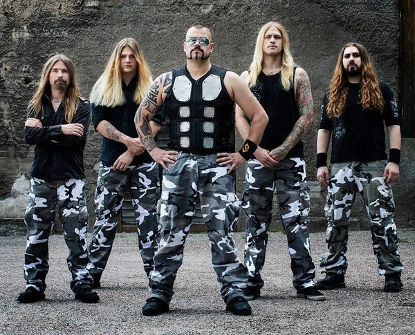

О группе
Sabaton — шведская метал-группа, основанная в 1999 году. Известна своими песнями, посвящёнными военной тематике и историческим событиям.
Дискография
| Альбом | Год | Жанр |
|---|---|---|
| Primo Victoria | 2005 | Heavy Metal |
| Attero Dominatus | 2006 | Heavy Metal |
| The Art of War | 2008 | Heavy Metal |
| Carolus Rex | 2012 | Heavy Metal |
| Heroes | 2014 | Heavy Metal |
| The Last Stand | 2016 | Heavy Metal |
| The Great War | 2019 | Heavy Metal |